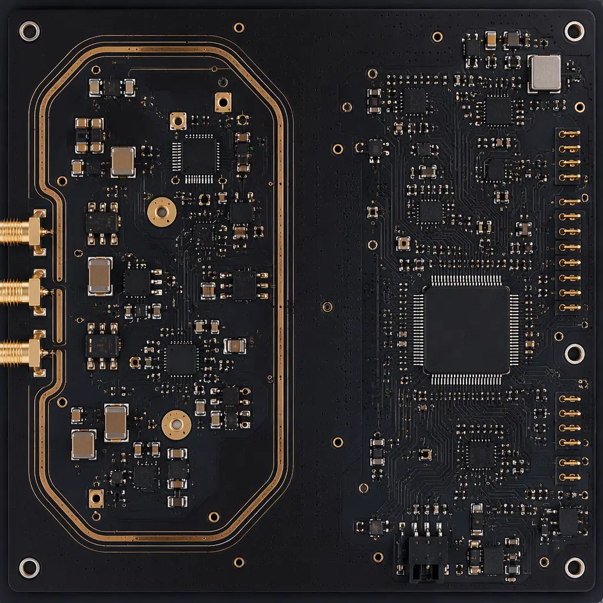
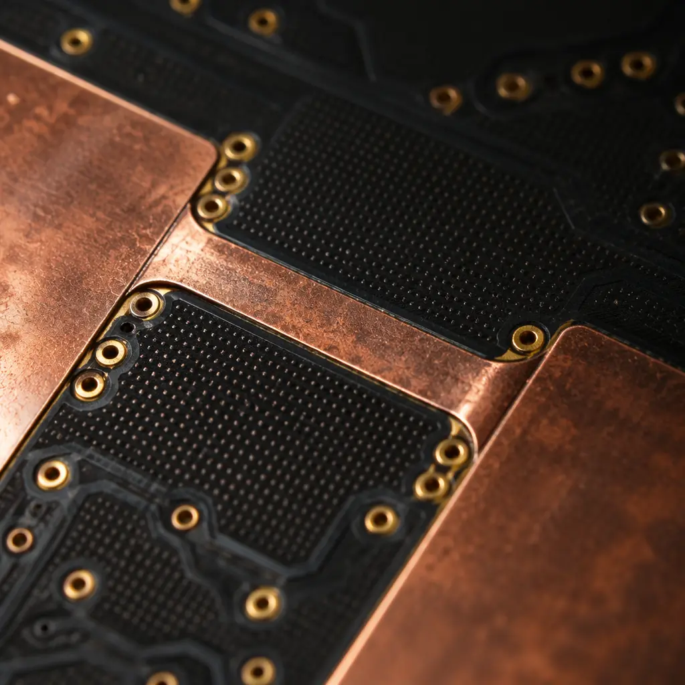
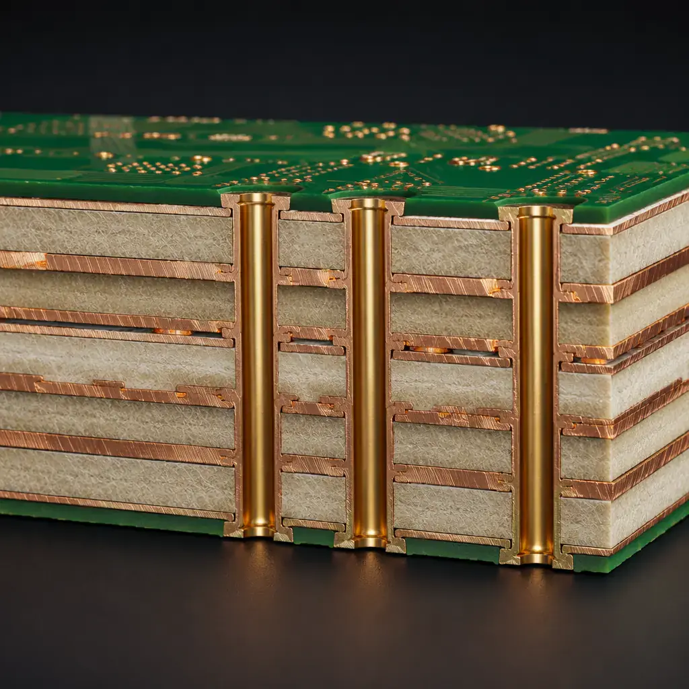

84|
84| Every PCB that reads a sensor, drives a motor, or processes an RF signal is a mixed-signal board. The analog front-end lives in a world of microvolts and nanoamperes; the digital back-end switches at gigahertz rates. Put them on the same substrate without deliberate isolation, and the digital noise floor rises through the analog section like static on a radio — reducing a 12-bit ADC to 8 effective bits before the firmware team even writes a line of code.
102| 103|Our Shenzhen facility has produced mixed-signal boards for IoT sensor nodes, industrial PLC analog input modules, medical diagnostic front-ends, and automotive ECU sensor interfaces — processing over 250,000 mixed-signal PCBs annually across 8 SMT lines. This article distills the design rules that separate a board that works on revision 1 from one that enters a six-month debug loop.
104| 105|
106| 107| 108|Why Mixed-Signal Boards Fail — The Physics Before the Schematic
109| 110|Mixed-signal failures are rarely component defects. They are layout failures masquerading as "noise problems." Three physical mechanisms dominate:
111| 112|Ground Bounce — Digital Return Currents Don't Stay in Their Lane
116|When a CMOS gate switches, it pulls a current spike through the power distribution network. That spike returns through the ground plane — and in an undivided ground plane, it flows directly under the analog section. For a 16-bit ADC with a 3.3V reference, one LSB equals 50 µV. A single gate switching at 3.3V with 10 mA through 5 mΩ of copper plane produces a 50 µV drop — one entire bit of resolution lost per switching event. The fix is not splitting the plane blindly (see Section 2); it is understanding where the return currents actually flow and controlling that path. Our boards use controlled-impedance routing with dedicated return-path vias to keep digital return currents out of analog territory.
117|Capacitive Crosstalk — FR-4 Is Not an Insulator at High Frequencies
124|Two parallel traces 6 mil apart on FR-4 form a capacitor of approximately 0.5 pF per inch. At 100 MHz, that is 3.2 kΩ of coupling impedance — enough for a 3.3V digital trace to inject millivolts into a neighboring analog trace. The rule is simple: 3× the dielectric height between analog and digital traces, minimum. For a 4-mil prepreg, that means 12-mil spacing. On dense boards where spacing is constrained, we add grounded guard traces — a copper trace connected to analog ground between every analog signal and the nearest digital signal, with via stitching every λ/20 (roughly 1.5 cm at 1 GHz).
125|Substrate Coupling — The Path You Can't See
132|FR-4 has a bulk resistivity of approximately 10⁸ Ω·cm. Digital switching noise injects displacement currents directly into the substrate, where they propagate to analog nodes regardless of surface trace routing. This is the hardest coupling mechanism to fix post-layout — it requires substrate-level design decisions: using low-loss materials (Rogers 4350B for the analog layer in the stackup), maximizing the distance between digital ICs and analog front-ends (>10 mm separation), and adding grounded substrate contacts (via fences). See our PCB stackup design guide for material selection trade-offs.
133|Key Takeaway: Mixed-signal problems are predictable, not mysterious. They follow Maxwell's equations. Every failure has a specific coupling mechanism — ground bounce (conductive), crosstalk (capacitive/inductive), or substrate injection (displacement current). Identify the mechanism before you change the layout.
138|The Ground Plane Decision — Split vs. Unified vs. Bridged
142| 143|The most contentious topic in mixed-signal design is whether to split the ground plane. The answer depends on frequency, precision, and what you're willing to verify in simulation.
144| 145|
146| 147|| Strategy | When to Use | Risk | Best For |
|---|---|---|---|
| Unified Ground | Digital frequencies <50 MHz, ADC resolution ≤10 bits | Lowest — no return-path breaks | Simple mixed-signal: temperature sensors, basic motor controllers |
| Split Ground (moat) | ≥14-bit ADC, analog bandwidth <1 MHz, low-speed digital | Medium — must verify no traces cross the moat | Precision instrumentation: weigh scales, medical ECG front-ends |
| Bridged Ground | ≥16-bit ADC, mixed high-speed digital, RF present | Highest complexity — bridge location is critical | High-performance: SDR, spectrum analyzers, 5G O-RU radio boards |
The bridged ground approach — the one we recommend for most professional mixed-signal designs with ≥12-bit converters — uses a single ground plane with a narrow "bridge" region directly under the ADC or mixed-signal IC. Analog and digital sections share the same copper pour everywhere except at the bridge, where a deliberate constriction forces return currents to flow through the ADC's internal substrate connection. This gives you the low-impedance return path of a unified plane with the current-steering control of a split plane.
155| 156|Bridge Placement Rule: Under the Converter, Not Between Sections
160|The bridge must be located directly beneath the mixed-signal IC — typically an ADC, DAC, or codec. Width: 2-3× the IC package width. The idea is that all return currents from the digital section must pass through the IC's substrate (where they are common-mode and rejected by the differential analog input) before reaching the analog section. A bridge placed elsewhere in the layout creates a common-impedance coupling point that adds noise instead of rejecting it. See our PCB testing guide for post-assembly noise floor verification.
161|Component Placement — The Physical Partitioning That Determines Everything
166| 167|Mixed-signal placement is not about minimizing board area; it is about maximizing isolation. The placement phase — before a single trace is routed — sets the noise floor. Get it wrong and no amount of routing gymnastics will recover the lost SNR.
168| 169|Analog Section Placement — Closest to the Connector
173|The analog front-end (op-amps, filters, reference voltage, ADC analog inputs) should be placed closest to the analog input connector. This minimizes the antenna area for noise pickup on input traces. Place the ADC at the boundary between analog and digital sections. For a 4-layer board dedicating layers 1 and 4 to analog signals: keep the entire analog section within a 50×50 mm zone, with the crystal oscillator placed >25 mm away from the ADC input pins. A 25 mm separation on FR-4 provides roughly 60 dB of isolation at 100 MHz — enough for 10 effective bits without guard structures.
174|Power Supply Partitioning — Separate Regulation, Shared Reference
181|Use independent LDO regulators for analog and digital supply rails, fed from a common upstream switching regulator. The analog LDO should have >60 dB PSRR at the switching frequency. Add a ferrite bead (e.g., BLM18PG121SN1, 120 Ω at 100 MHz) between the digital 3.3V rail and the analog LDO input to block switching noise from propagating upstream. Decoupling: 10 µF tantalum + 0.1 µF ceramic + 1 nF NPO at each analog IC power pin, placed within 2 mm of the pin. See our DFM design tips for decoupling capacitor placement rules.
182|Clock and Digital I/O Placement — The Noise Aggressor Zone
189|Microcontrollers, FPGAs, and high-speed digital interfaces (SPI, I²C at >1 MHz, parallel buses) are noise aggressors. They belong on the far side of the ADC from the analog section. The clock signal trace between the oscillator and the microcontroller must not cross the analog section — not even on a different layer. Clock harmonics extend to 11× the fundamental (the 11th harmonic of a 25 MHz clock is 275 MHz). Route clock traces as stripline (embedded between two planes) and add series termination within 5 mm of the driver.
190|
194| 195| 196|Layer Stackup — The 6-Layer Reference Design That Solves 90% of Mixed-Signal Problems
197| 198|For boards with ≥12-bit converters and digital content above 50 MHz, a 4-layer stackup is marginal. The 6-layer stackup below is our production-proven reference for precision mixed-signal designs:
199| 200|| Layer | Assignment | Purpose |
|---|---|---|
| L1 (Top) | Analog signals + critical digital | Low-noise analog routing; controlled-impedance digital traces |
| L2 | Analog ground plane (solid) | Uninterrupted return path for all L1 analog signals |
| L3 | Digital signals | General digital routing; isolated from analog by L2 ground |
| L4 | Power plane (split) | Analog 3.3V / digital 3.3V / digital 1.8V — partitioned, same layer |
| L5 | Digital ground plane (solid) | Return path for L3 and L6 digital traces |
| L6 (Bottom) | Low-speed digital + analog aux | I²C, UART, GPIO; board-edge analog guard ring |
Key design rules for this stackup: L1-to-L2 dielectric thickness ≤4 mil (100 µm) to minimize analog signal loop area; L4-to-L5 dielectric ≥8 mil (200 µm) to provide adequate power-ground plane capacitance for digital decoupling; total board thickness 1.6 mm with FR-4 Tg170 for standard applications, or Rogers 4350B prepreg between L1-L2 for designs above 1 GHz analog bandwidth. Our facility supports 3/3 mil trace/space for the dense mixed-signal routing these boards demand.
211| 212| 213|Verification — Measuring What the Layout Actually Delivered
214| 215|Mixed-signal board bring-up without measurement is gambling. Three measurements separate a validated design from an untested one:
216| 217|Noise Floor Measurement — ADC Input Shorted to Ground
221|Short the ADC input to analog ground at the connector (not at the ADC pin — this includes the full analog signal path). Acquire 10,000 samples at the ADC's maximum sample rate. Compute the RMS noise in LSBs. For a 16-bit ADC, an RMS noise floor >3 LSBs (≈150 µV for 3.3V reference) indicates analog signal path contamination. Our factory's testing capability includes 24-bit source-measure units with 100 nV resolution for precision verification.
222|Digital Activity Injection Test — Run the CPU at Full Load
229|With the ADC input still shorted, run the microcontroller at maximum clock frequency with all peripherals active (SPI, I²C, PWM, UART TX). The noise floor should not increase by more than 1 LSB RMS. An increase of >2 LSBs means digital return currents are finding a path through the analog section — re-examine the ground plane bridge width and via stitching density.
230|PSRR Measurement — Modulate the Input Supply
237|Superimpose a 100 mVpp sine wave at 100 kHz onto the board's main 5V input rail using a line injector. Measure the ADC output spectrum. The 100 kHz spur should be below the ADC's noise floor. If it is visible, the analog LDO's PSRR is insufficient at 100 kHz or the ferrite bead between the digital and analog rails is saturating. Our production test fixtures at Huaxing PCBA verify PSRR on every mixed-signal board before shipment, catching layout-dependent supply rejection failures that pass schematic review.
238|Factory Reality: We have seen mixed-signal boards where the difference between a working first revision and a scrap run was a single missing ground via. The via connected the ADC's exposed thermal pad to the analog ground plane — without it, the pad acted as a parasitic antenna coupling digital switching noise into the ADC substrate. Board worked at room temperature, failed at 45°C. One 0.3 mm via. This is why our DFM review for mixed-signal designs inspects every ADC thermal pad connection individually.
243|What Procurement Engineers Should Ask Before Releasing a Mixed-Signal BOM
247| 248|Mixed-signal boards introduce procurement complexity that pure digital or pure power boards do not. Component tolerances that are "close enough" for digital become catastrophic for analog precision.
249| 250|Resistor Tolerance in Gain-Setting Networks
254|A difference amplifier's CMRR depends on resistor matching, not absolute value. Four 1% resistors in a differential amplifier produce a worst-case CMRR of 34 dB — essentially useless for rejecting 50/60 Hz mains hum. 0.1% matched resistor networks (e.g., LT5400, ±0.01% matching) deliver >80 dB CMRR. The BOM cost difference: $0.02 vs $2.50 per amplifier. But skipping the precision network means the board fails conducted immunity testing — and a respin costs 50× more than the resistor upgrade. Our materials guide covers passive component selection for precision circuits.
255|Capacitor Dielectric in the Signal Path
262|X7R and X5R capacitors are microphonic and have a voltage coefficient of -25% at rated voltage. In an analog filter, an X7R capacitor changes the cutoff frequency by 25% depending on DC bias — and introduces audible piezoelectric ringing if the board vibrates. Use C0G/NP0 for all capacitors in the analog signal path. They cost 3-5× more per unit, but a typical mixed-signal board uses <20 signal-path capacitors total — the BOM impact is under $10.
263|Procurement Tip: When sourcing mixed-signal PCB assembly, verify the manufacturer's capability to handle precision analog components. Ask: "What is your process for ESD protection during analog component placement?" If the answer is "standard ESD mats" without specifying ionization, humidity control, and wrist strap verification — the analog yield on that line will be unpredictable. Our facility operates all analog-assembly SMT lines at 45% ±5% RH with overhead ionizers achieving <50V residual charge on all work surfaces. This is standard for medical-device-grade PCB assembly — and it makes a measurable difference in analog yield.
268|Mixed-Signal Design Is a Manufacturing Discipline, Not Just an Engineering One
272| 273|The same schematic on two different PCB layouts produces two different analog noise floors — and the same layout from two different manufacturers produces two different yields. The design rules in this article — bridged ground planes, component partitioning by noise domain, 6-layer stackups with dedicated analog return paths, and C0G-only signal-path capacitors — are not theoretical guidelines. They are the difference between a product that ships and one that spends another quarter in compliance testing.
274| 275|At Huaxing PCBA, we manufacture mixed-signal boards for applications ranging from IoT sensor nodes sampling at 100 SPS to industrial PLC analog modules with 24-bit delta-sigma ADCs and 5G radio boards digitizing 100 MHz of instantaneous bandwidth. Every board goes through the verification sequence described in Section 5 — shorted-input noise floor, digital activity injection, and PSRR sweep — before it leaves our 15,000 m² Shenzhen facility. If your next mixed-signal design needs a manufacturer that understands the analog half as well as the digital half, contact our engineering team with your Gerber files and BOM. We'll return a DFM review within 24 hours — including noise-floor predictions based on your stackup and placement.
276| 277| 315|
316|
315|
316|